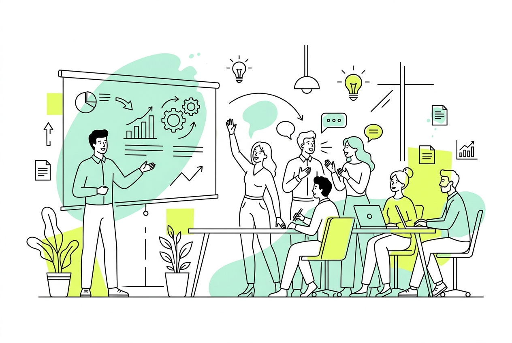

企業・店舗向け 人材育成・リスキリング

ただマニュアルを教え込むだけでは、自発的な行動は生まれません。相手に寄り添い、目的を腹落ちさせる「伝達の技術」が必要です。
「研修のニスト」が現役ナレーターとしての「声の力」と現場経験を武器に、即戦力のスタッフや、組織を牽引する次世代リーダーを育てます。
大手カフェチェーン（スターバックスコーヒー）での店舗マネジメント・現場人材育成の経験を経て、現在はプロのナレーターとして活動。
言葉と表情を巧みに操り、相手の心に直接響かせる「伝達のプロフェッショナル」。
ただ形だけのルールやマニュアルを教え込むのではなく、「なぜそれが必要なのか」を明確に言語化。スタッフ自身の腹落ちと自発的な行動を促し、組織力を底上げする「伴走型の研修スタイル」を得意としています。
ご受講人数が増えるにつれて、ボリュームディスカウント（割引）が適用されます。
少人数での集中指導から、数十名規模の全体研修まで、ご予算や育成課題に合わせて柔軟なプログラムをご提案いたします。